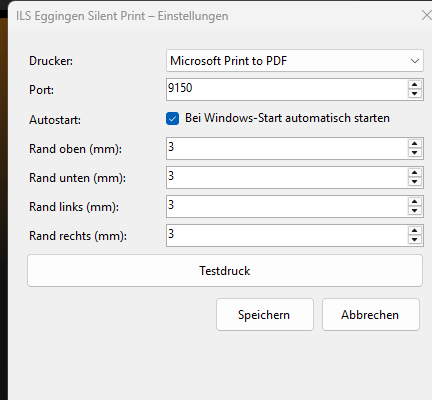
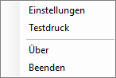

Alarmdruck einrichten
Damit eine Alarmdepesche beim Alarmieren automatisch aus dem Drucker kommt, muss auf dem PC an der Einsatzerfassung einmalig die Silent-Print-App installiert werden – ein kleines Programm, das im Hintergrund läuft und Druckaufträge von ILS Eggingen entgegennimmt.
Ohne die App funktioniert ILS Eggingen ganz normal weiter – es wird nur nichts automatisch ausgedruckt. Für den Übungsbetrieb mit echtem Alarmdruck (z. B. am Gerätehaus-Drucker) ist die App aber sehr zu empfehlen.
Voraussetzungen
- Windows 10 oder 11
- Microsoft Edge WebView2 Runtime – auf den meisten Windows-Rechnern bereits vorinstalliert (kommt mit Microsoft Edge)
- Ein eingerichteter Drucker (kann auch ein PDF-Drucker sein, z. B. für einen ersten Test)
Installation
-
App herunterladen
Lade die aktuelle Version direkt herunter:
IlsEggingenSilentPrint.exe herunterladen
Alle Versionen und Änderungsprotokoll gibt es auf der GitHub-Releases-Seite.
-
Datei ausführen
Die heruntergeladene
.exe-Datei doppelklicken. Windows SmartScreen warnt bei neuen, unsignierten Programmen oft mit „Der Computer wurde durch Windows geschützt“ – das ist normal für kleine Open-Source-Tools. Auf „Weitere Informationen“ und dann „Trotzdem ausführen“ klicken. -
Läuft im Hintergrund
Die App startet als kleines Symbol im Infobereich der Taskleiste (System Tray, unten rechts neben der Uhr – ggf. unter dem Pfeil „Ausgeblendete Symbole einblenden“ zu finden). Es öffnet sich kein sichtbares Fenster – außer beim allerersten Start: Ist noch kein Drucker eingestellt, öffnen sich die Einstellungen automatisch (siehe nächster Schritt).
-
Drucker einstellen
In den Einstellungen wählst du den gewünschten Drucker aus der Liste, kannst die Ränder anpassen und „Bei Windows-Start automatisch starten“ aktivieren, damit die App nach einem Neustart des PCs nicht vergessen wird. Mit „Speichern“ übernehmen. Später erreichst du dieses Fenster jederzeit wieder über Rechtsklick auf das Tray-Symbol → „Einstellungen“.

-
Testdruck
Rechtsklick auf das Tray-Symbol öffnet das Menü mit „Testdruck“ – druckt sofort eine Testseite auf dem eingestellten Drucker. Alternativ testest du direkt aus ILS Eggingen heraus (nächster Schritt).

Mit ILS Eggingen verbinden
Öffne in ILS Eggingen Verwaltung → Einstellungen → Alarmdruck. Läuft die App auf demselben PC, zeigt die Statuszeile oben „Verbunden – Drucker: …“ in Grün. Über den Button „Testseite drucken“ lässt sich die Verbindung direkt aus dem Browser heraus prüfen.
Die Silent-Print-App muss auf jedem PC installiert sein, von dem aus tatsächlich gedruckt werden soll – typischerweise der PC an der Einsatzerfassung. Sie verbindet sich nur mit dem Browser auf demselben Rechner (Port 9150), nicht über das Netzwerk mit anderen PCs.
Fehlersuche
- Statusanzeige bleibt rot/„nicht verbunden“ → prüfen, ob das Tray-Symbol noch sichtbar ist (App evtl. beendet oder abgestürzt) und die App neu starten.
- Kein Ausdruck trotz „Verbunden“ → im Tray-Menü „Testdruck“ probieren; zeigt das eine Fehlermeldung, liegt es meist am ausgewählten Drucker (z. B. offline oder kein Papier).
- App startet nach Neustart des PCs nicht automatisch → in den Einstellungen „Bei Windows-Start automatisch starten“ aktivieren.